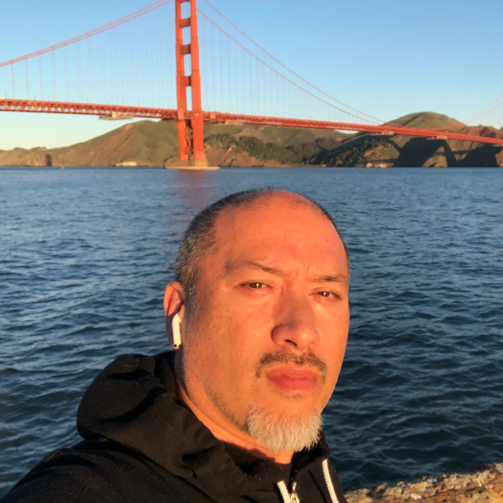

The one who already knows
You feel it in your chest: it is the right thing to care for them the best way you can. You do not need convincing. You need a way to do it without losing yourself.
A letter from El Aranas · San Francisco Bay Area
If your heart already knows it is the right thing to care for the people who cared for you — and you do not want to disappear while you do it — you are in the right place.
Why I am here

El Aranas
End-of-life doula · caregiver for twenty years
San Francisco Bay Area
When my father had a stroke, I volunteered to come home. You do not think much about one year, or two, until it turns into five, then ten, then twenty. I cared for my dad. Then I cared for my parents. It was an honor. It was also a disappearing.
I know the blessings. I know the hardships. I know the longevity it takes. I know the quiet strain money puts on a family, and the dynamics that no one puts on the greeting card. I know what it is to love someone so completely that you forget to ask who you are when the room gets quiet.
When they transitioned home, I did not know who I was. I did not know what I liked to do. I guessed. I tried industry after industry. For a long time I chased what looked practical and held this gift to myself.
I went into hospice work as a home health aide and CNA, and I loved it the way a thirsty person loves water. I was present with nearly one hundred souls on their way home. Sometimes it happened in the middle of a bed bath. Sometimes I simply sat, so that if there was fear, they would not have to carry it alone. I wanted them to have a choice. I gave every beautiful person all the love I had — until I had no more to give. I had no boundaries. I burned out again.
What I know now is simple. Presence is the work. And presence is protected by a few quiet decisions made while there is still time.
The turning
So many adult children become unpaid nurses, case managers, night-shift attendants, and family diplomats — and then feel guilty for wanting a walk around the block. I lived that. I do not want that to be the only way love can look.
Sacred Plans exists so that the people you love can be prepared — their wishes spoken, a few quiet provisions in place — and so that you can remain their child, their person, not only their 24/7 caregiver.
It also exists for you, while you are still well enough to make your own sacred plan. The greatest kindness we can offer the next generation is not more stoicism. It is a map.
If this is you
You feel it in your chest: it is the right thing to care for them the best way you can. You do not need convincing. You need a way to do it without losing yourself.
You wonder where a caregiver goes to recharge without the guilt. You feel helpless in a system that is large and a house that is small. You are allowed to put the pitcher down and drink.
Someone has had a stroke, a diagnosis, a slow change no one can name yet. Decisions are arriving faster than wisdom. We can slow the room down.
You do not want your children to guess. You want your wishes, your papers, and your values in one sacred place — so the people who love you can stay present instead of scrambling.
What twenty years taught me
Honor and hardship live in the same house. Naming both is how we keep caregivers from disappearing.
To wash a face you have loved your whole life. To be there. To learn that presence is a language older than advice.
Stroke, decline, and devotion do not run on a tidy timeline. A year becomes a decade while you are still calling it temporary.
Love does the labor either way. Without a few things in place, the labor gets heavier than it ever needed to be.
Siblings, history, and unspoken expectations arrive at the bedside whether you invite them or not. Someone has to hold the center.
Rest feels like betrayal until you learn that a depleted caregiver cannot keep a peaceful house. Rest is part of the care plan.
People do not always need fixing. Sometimes they need a witness — so fear has company, and leaving is not lonely.
Sacred Plans
I am an end-of-life doula. The heart work comes first. When you are ready, the practical pieces can sit beside it — quietly — so love is not asked to do a job it was never meant to do alone.
Wishes spoken while there is still time. Financial papers found and faced. Healthcare choices written down. The conversations that keep a crisis from becoming a war.
A living gift to the next generation of caregiving children: what you want, what you do not want, where the papers live, and how you hope to be companioned at the end.
Non-medical companionship before, during, and after the dying time. Vigil sitting. Ritual. Legacy. A calm body in the room when the family needs to be family.
Help naming boundaries before burnout writes them for you. Permission to recharge. A place to say the unsayable without being told you are selfish for needing air.
What a doula is — and is not
An end-of-life doula does not replace hospice, physicians, nurses, attorneys, or faith leaders. I walk beside them. I help you prepare, speak, rest, and remain present. I can sit so a person does not have to die alone if that is their fear. I can sit so you can sleep.
During my years as a CNA and home health aide, I learned that the smallest kindnesses — a warm cloth, a quiet chair, a hand that does not flinch — can turn a frightening passage into a human one.
If and when it is time to talk about papers and provisions, we will. Not as a pitch. As part of keeping the people you love from having to invent a plan in a waiting room.
What I learned the long way
I will not meet you with a stack of products. The first conversation is a human one. I only mention this because I lived the difference it would have made — for my parents, and for me.
When a family has already chosen, in calm daylight, a few simple things, the people at the bedside get to remain a son or a daughter. The plan holds the weight that love should not have to carry alone.
We talk about these only when the heart has been heard. I can walk with you toward the right licensed people and the right papers. You stay in the relationship. The documents keep watch.
A first step that does not ask too much
There is no sales pitch waiting on the other side of this page. There is a conversation. We find out what is needed. We take the next kind step, and then the one after that.
30 minutes · no obligation · Pleasanton, CA and beyond · (510) 606-5199
You tell me where it hurts, what you hope, and what feels impossible. I listen all the way to the end of the sentence.
Documents, wishes, extra hands, vigil support, or a sacred plan of your own. Only what serves.
The goal is not a perfect death. The goal is a family that can still recognize itself when the hard days come.
An invitation
I held this gift close while I tried to become someone more impressive on paper. I am done hiding it. If your family needs a companion, a plan, or simply a calm voice that has walked the long road — I would be honored to meet you.